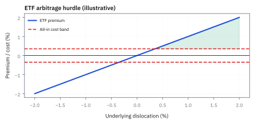
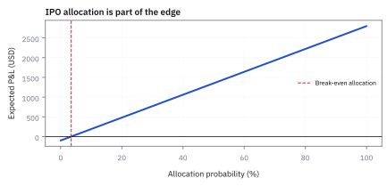
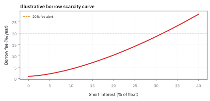

24.3 Exchanges, Brokers, ETFs, IPOs, and Securities Lending
ระหว่างสัญญาณเทรดกับเงินในบัญชีมีตัวกลางหลายชั้น แต่ละชั้นมีต้นทุนและความเสี่ยงที่ต้องนับเป็นตัวเลข
กองทุนตัดสินใจซื้อหุ้น Microsoft (MSFT) 50,000 หุ้นตอนราคา \$410.00 คำสั่งแบ่งไปสองที่ ตลาด A ได้ 30,000 หุ้นที่ \$410.03 ค่าธรรมเนียม \$0.002 ต่อหุ้น ผู้ค้า B ได้ 20,000 หุ้นที่ \$410.01 ค่าธรรมเนียม \$0.004 ต่อหุ้น ฝ่ายปฏิบัติการสรุปว่า “A ค่าธรรมเนียมถูกกว่าครึ่งหนึ่ง ครั้งหน้าส่ง A ทั้งหมด” ถูกไหม และการซื้อครั้งนี้เสียเงินไปเท่าไร?
ลองตอบก่อนเปิดเฉลย
ไม่ถูก ที่ A ต้นทุนรวมคือ $0.03+0.002=\$0.032$ ต่อหุ้น ที่ B คือ $0.01+0.004=\$0.014$ ต่อหุ้น B ถูกกว่าเกินสองเท่าเพราะราคาที่ได้ดีกว่า การซื้อครั้งนี้เสีย $960+280=\$1{,}240$ หรือ \$0.0248 ต่อหุ้น ถ้าสัญญาณคาดกำไร 8 bp ของ \$20.5 ล้าน คือ \$16,400 จะเหลือ \$15,160 ค่าธรรมเนียมที่ติดป้ายเป็นแค่ส่วนเล็กของต้นทุน
ภาพรวมก่อนลงสูตร
ทั้งเล่มคิดราคาและความเสี่ยงราวกับว่าซื้อขายได้ที่ราคาบนจอ หน้านี้ดูว่าคำสั่งจริงเดินผ่านใคร: นักลงทุนส่งคำสั่งให้โบรกเกอร์ ระบบของโบรกเกอร์เลือกส่งต่อไปตลาดหลักทรัพย์ (exchange) ที่มีสมุดคำสั่งเปิดเผย ระบบจับคู่นอกตลาด (ATS) ซึ่งบางแห่งไม่เปิดเผยคำสั่งเลย เรียก dark pool หรือผู้ค้า (dealer) ที่ขายจากสต็อกตัวเอง แต่ละทางได้ราคาไม่เท่ากัน แล้วสำนักหักบัญชีค้ำประกันการส่งมอบหุ้นกับเงินให้ทั้งสองฝั่ง
เครื่องมือเดียวที่ใช้ทั้งหน้าคือบัญชีที่เทียบพอร์ตจริงกับพอร์ตบนกระดาษ เราจะนิยามต้นทุนการส่งคำสั่ง คิดตัวอย่าง MSFT ดูว่าคำสั่งซื้อทันทีกินสมุดคำสั่งกี่ชั้น นับหุ้นที่ไม่ได้ ชั่งการแบ่งคำสั่งใหญ่ แล้วไปดูตัวกลางอีกสามแบบด้วยบัญชีแบบเดียวกัน: ETF ที่ราคาถูกยึดไว้กับตะกร้าหุ้น หุ้นเข้าตลาดใหม่ (IPO) ที่การได้รับจัดสรรเปลี่ยนคำตอบ และการยืมหุ้นเพื่อขายชอร์ต แล้วจบที่ option ซึ่งให้ความเสี่ยงขาลงโดยไม่ต้องยืมหุ้น รูปด้านล่างคือเส้นทางของคำสั่งในโจทย์
รูป — เส้นทางของคำสั่งจากนักลงทุนถึงการส่งมอบ
ศัพท์ที่ใช้ในหัวข้อนี้
- Implementation shortfall (IS)
- ส่วนต่างระหว่างพอร์ตบนกระดาษที่ได้ของครบทันทีที่ราคาตอนตัดสินใจ กับพอร์ตจริง ใช้วัดว่าการลงมือแพงกว่าความตั้งใจเท่าไร
- Exchange, ATS, dark pool และ dealer
- ทางที่คำสั่งไปจับคู่ได้: ตลาดหลักทรัพย์ที่มีกติกาและสมุดคำสั่งเปิดเผย (lit) ระบบจับคู่นอกตลาด ซึ่งแบบที่ไม่เปิดเผยขนาดและตัวตนจนจับคู่เสร็จเรียก dark pool และผู้ค้าที่ซื้อขายกับเราจากสต็อกตัวเอง dark pool ช่วยให้คำสั่งก้อนใหญ่ไม่ดันราคา แต่ไม่รู้ว่าจะได้ของเท่าไร
- Market order และ limit order
- market order ซื้อขายทันทีกับคำสั่งที่รออยู่ในสมุด เริ่มจากราคาดีที่สุด ได้ของแน่แต่ราคาแย่ limit order วางรอในสมุดที่ราคาที่กำหนด ได้ราคาดีกว่าแต่ไม่รู้ว่าจะได้ของเมื่อไร
- Best execution
- หน้าที่ของโบรกเกอร์ที่ต้องพยายามให้ลูกค้าได้ผลดีที่สุดทั้งราคา ความเร็ว และโอกาสได้ของ ไม่ใช่ดูค่าธรรมเนียมอย่างเดียว
- ETF, NAV และ AP
- ETF คือกองทุนที่ซื้อขายในตลาดระหว่างวัน NAV คือมูลค่าตะกร้าหุ้นที่กองทุนถือต่อหน่วย AP (authorized participant) คือสถาบันที่แลกตะกร้าหุ้นกับหน่วย ETF ได้ ซึ่งดึงราคาให้ใกล้ NAV
- IPO และการจัดสรร (allocation)
- การขายหุ้นให้สาธารณะครั้งแรก ผู้จองอาจได้หุ้นไม่ครบตามที่จอง และได้มากหรือน้อยขึ้นกับว่าดีลนั้นมีคนแย่งแค่ไหน
- Securities lending และ borrow fee
- การยืมหุ้นจากผู้ถือระยะยาวเพื่อไปขายชอร์ต ผู้ยืมวางหลักประกันและจ่ายค่ายืมรายปี ผู้ให้ยืมเรียกคืน (recall) ได้เสมอ
สัญลักษณ์และหน่วย
| สัญลักษณ์ | ความหมาย | หน่วย |
|---|---|---|
| $Q,\ q_k$ | จำนวนหุ้นที่ตั้งใจซื้อ และจำนวนที่ได้ในแต่ละก้อน | หุ้น |
| $P_0,\ P_{f,k},\ P_T$ | ราคาตอนตัดสินใจ ราคาที่ได้ของก้อนที่ $k$ และราคาตอนจบ | \$ ต่อหุ้น |
| $c_k$ | ค่าธรรมเนียมต่อหุ้นของก้อนที่ $k$ | \$ ต่อหุ้น |
| $\eta,\ \sigma$ | ตัวคูณ impact ชั่วคราว และความผันผวนของราคาต่อช่วง | \$ ต่อหุ้นต่อหุ้น, \$ ต่อหุ้น |
| $p,\ f_b,\ r_c$ | โอกาสได้รับจัดสรร ค่ายืมหุ้นต่อปี และดอกเบี้ยของหลักประกันต่อปี | สัดส่วน, ต่อปี, ต่อปี |
ขั้นที่ 1 — วัดต้นทุนเทียบราคาตอนตัดสินใจ
ต้องมีเกณฑ์เทียบก่อนพูดว่าแพงหรือถูก ทศวรรษ 1980 กองทุนนิยมเทียบกับราคาเฉลี่ยถ่วงปริมาณของวัน (VWAP) André Perold (1988) ชี้ช่องโหว่: ถ้าตัดสินใจซื้อตอนเช้าที่ \$100 แต่โบรกเกอร์รอไปซื้อตอนบ่ายที่ \$105 ขณะที่ VWAP ช่วงบ่ายคือ \$105.05 รายงานจะบอกว่าชนะ VWAP 0.05 ทั้งที่กองทุนเสีย \$5 ต่อหุ้นจากการรอ เขาจึงเสนอให้เทียบกับราคาตอนตัดสินใจ นี่คือนิยาม
ฝั่งซื้อ ได้ราคาสูงกว่าตอนตัดสินใจคือเสีย ฝั่งขาย ได้ราคาต่ำกว่าคือเสีย เครื่องหมายจึงสลับกันเพื่อให้ต้นทุนเป็นบวกทั้งสองฝั่ง ส่วนค่าธรรมเนียมบวกเข้าไปทั้งสองฝั่ง สลับเครื่องหมายผิดครั้งเดียว รายงานจะบอกว่าทำได้ดีกว่าเกณฑ์ทั้งที่แย่กว่า
ขั้นที่ 2 — คำสั่ง MSFT ทีละที่
โจทย์ให้อะไรมาบ้าง: $P_0=410.00$ ตลาด A $q=30{,}000$ ที่ 410.03 ค่าธรรมเนียม 0.002 ผู้ค้า B $q=20{,}000$ ที่ 410.01 ค่าธรรมเนียม 0.004 และสัญญาณคาดกำไร 8 bp ของมูลค่า $50{,}000(410)=\$20.5$ ล้าน
คำตอบ: เสีย \$1,240 หรือ \$0.0248 ต่อหุ้น A แพงกว่า B เกินสองเท่า ($0.032$ เทียบ $0.014$ ต่อหุ้น) ทั้งที่ค่าธรรมเนียมถูกกว่า เพราะราคาที่ได้แย่กว่า 2 เซนต์ กำไรที่คาดจากสัญญาณเหลือ \$15,160
ตรวจเองใน 10 วินาที: $960+280=1{,}240$ และ 1,240 หารด้วย 16,400 คือ 7.6% ของกำไรที่คาดหายไปกับการส่งคำสั่ง
ขั้นที่ 3 — คำสั่งซื้อทันทีกินสมุดคำสั่งกี่ชั้น
ทำไมตลาด A ได้ราคา 410.03 ทั้งที่ราคาเสนอขายบนจอคือ 410.01? เพราะจอแสดงแค่ชั้นบนสุดของสมุดคำสั่ง (order book) ซึ่งเรียงคำสั่งที่รออยู่ตามราคาก่อนแล้วตามเวลา market order ซื้อ 50,000 หุ้นจะกินคำสั่งขายทีละชั้นจนครบ ตัวอย่างสมมติของสมุด: ราคาเสนอซื้อดีที่สุด 409.99 เสนอขาย 410.01 (ราคากลาง 410.00) ฝั่งขายมี 10,000 หุ้นที่ 410.01, 15,000 ที่ 410.02, 25,000 ที่ 410.03 และ 30,000 ที่ 410.05
โจทย์ให้อะไรมาบ้าง: market order ซื้อ 50,000 หุ้นทั้งก้อนในตลาดนี้ เทียบกับราคากลาง 410.00
ราคาเฉลี่ยที่ได้คือ 410.023 แพงกว่าราคากลาง 2.3 เซนต์ต่อหุ้น แยกเป็นสองก้อน: ครึ่งหนึ่งของส่วนต่างราคาเสนอซื้อขาย 0.01 ต่อหุ้น (\$500) ซึ่งเสียเสมอแม้ซื้อหุ้นเดียว กับอีก \$650 จากการไล่กินชั้นที่ลึกลงไป ซึ่งโตตามขนาดคำสั่ง หลังคำสั่งนี้ ราคาเสนอขายดีที่สุดกลายเป็น 410.05 ส่วนต่างถ่างจาก 0.02 เป็น 0.06 จนกว่าจะมีคนส่งคำสั่งขายใหม่เข้ามาเติม
ทางเลือกคือ limit order ซื้อที่ 410.00 แล้วรอ ซึ่งไม่เสียส่วนต่างเลยถ้าได้ของ แต่ไม่รู้ว่าจะได้เมื่อไรและได้เท่าไร การเลือกระหว่างสองแบบขึ้นกับความใจร้อน ความผันผวนของหุ้น (ยิ่งผันผวน ยิ่งเสี่ยงที่ราคาจะวิ่งหนีระหว่างรอ) และส่วนลดที่ตลาดให้คนที่วางคำสั่งรอ dark pool เป็นทางที่สาม: ไม่โชว์คำสั่งก้อนใหญ่ จึงไม่ดันราคา แต่มีปัญหาแบบ winner's curse คือคนที่ซื้อได้ก้อนใหญ่ใน dark pool มักได้เพราะอีกฝั่งรู้อะไรมากกว่า บางช่วง dark pool มีส่วนแบ่งราว 11–12% ของปริมาณซื้อขายของหุ้นบางตัว ทาง SEC จึงออกมาตรการเพิ่มความโปร่งใสตั้งแต่ปี 2009
คำตอบ: ราคาเฉลี่ย \$410.023 ต้นทุนเทียบราคากลาง \$1,150 โดย \$650 เป็นค่าของการกินสมุดลึก ตลาด A ในโจทย์ได้ 410.03 สำหรับ 30,000 หุ้น แปลว่าสมุดของมันบางกว่าตัวอย่างนี้
ตรวจเองใน 10 วินาที: $0.01(10{,}000)+0.02(15{,}000)+0.03(25{,}000)=100+300+750=1{,}150$
รูป — market order ซื้อ 50,000 หุ้นกินสมุดสามชั้น
ขั้นที่ 4 — ของที่ไม่ได้ก็มีต้นทุน
ถ้าตั้งใจซื้อ 60,000 หุ้นแต่ได้แค่ 50,000 แล้วราคาปิดที่ \$410.50 หุ้น 10,000 ตัวที่ไม่ได้ก็เป็นต้นทุนเหมือนกัน เพราะพอร์ตบนกระดาษได้กำไรจากมัน แต่พอร์ตจริงไม่ได้ เทียบสองพอร์ตตรง ๆ จะเห็นว่าต้นทุนแยกเป็นสองก้อน
ตอนลบ $P_T$ ของหุ้นที่ได้มาหักล้างกันพอดี ก้อนแรกจึงเหลือต้นทุนการลงมือตามนิยามของ implementation shortfall ก้อนหลังคือค่าเสียโอกาสของหุ้นที่ไม่ได้ ในตัวอย่างนี้ค่าเสียโอกาส \$5,000 ใหญ่กว่าต้นทุนการลงมือสี่เท่า การวาง limit order รอจนได้ของไม่ครบจึงไม่ได้ถูกเสมอ
ขั้นที่ 5 — แบ่งคำสั่งใหญ่: ถูกลงแต่เสี่ยงขึ้น
สมุดคำสั่งด้านบนบอกว่าคำสั่งก้อนใหญ่ดันราคาตัวเอง (market impact) ยิ่งซื้อมากในช่วงเดียวยิ่งแพงต่อหุ้น ทางออกคือแบ่งเป็นหลายช่วง แต่ระหว่างรอ ราคาก็เดินได้ Almgren และ Chriss (2000) ตั้งปัญหานี้ให้ชั่งกัน ตัวอย่างสมมติ: ขาย $X=100{,}000$ หุ้น impact ชั่วคราว $\eta n$ ต่อหุ้นเมื่อขาย $n$ หุ้นในช่วงเดียว ($\eta=0.000002$) ราคาเดินช่วงละ $\sigma=\$0.50$ ต่อหุ้น (ตัด impact ถาวรออกเพื่อให้เห็นแก่น)
แต่ละช่วงขาย $X/n$ หุ้น เสีย $\eta(X/n)$ ต่อหุ้น รวม $n$ ช่วงได้ $\eta X^2/n$ ต้นทุนจึงลดตามจำนวนช่วง ส่วนความเสี่ยงมาจากหุ้นที่ยังถืออยู่หลังแต่ละช่วง ซึ่งเจอการเดินของราคา $\sigma$ ต่อหุ้นต่อช่วงแบบอิสระกัน variance จึงเป็นผลบวกของกำลังสอง
แบ่งสองก้อนประหยัด \$10,000 แต่รับความไม่แน่นอน SD \$25,000 คำตอบที่ดีที่สุดขึ้นกับว่ากลัวความเสี่ยงแค่ไหน ไม่มีคำตอบเดียว ในงานจริง ต้นทุนต่อดอลลาร์มักถูกประมาณด้วยสมการถดถอยที่โตตามสัดส่วนของคำสั่งต่อปริมาณซื้อขายเฉลี่ยต่อวันยกกำลังค่าหนึ่ง บวกส่วนที่โตตามความผันผวนของหุ้น (รูปแบบ Kissel–Glantz) แล้วใช้แทน $\eta n$ ที่เป็นเส้นตรงในตัวอย่างนี้
ขั้นที่ 6 — ETF: ราคาถูกยึดไว้กับตะกร้าด้วยกรอบต้นทุน
ETF มีสองราคา: ราคาซื้อขายในตลาด และ NAV ซึ่งคือมูลค่าตะกร้าหุ้นที่กองทุนถือ ถ้าราคา ETF แพงกว่า NAV มาก AP จะซื้อตะกร้าหุ้น นำไปแลกหน่วย ETF ใหม่ (creation) แล้วขาย ETF ถ้าถูกกว่า ก็ทำกลับทาง (redemption) ถ้าทำแล้วไม่มีกำไรทั้งสองทาง ราคาต้องอยู่ในกรอบ (กลไกเต็มอยู่ในหน้า ETF creation-redemption)
$c_{\text{up}}$ และ $c_{\text{down}}$ คือต้นทุนรวมต่อหน่วยของแต่ละทาง: ค่าธรรมเนียมแลก ค่าซื้อขายตะกร้าและ ETF และดอกเบี้ยระหว่างรอส่งมอบ ตัวอย่าง: ETF ราคา 101.20 NAV 100.00 ค่าแลก 0.20 ค่าซื้อขายและเงินทุน 0.35 ต่อหน่วย บน 10,000 หน่วย ส่วนต่าง \$12,000 หักต้นทุน \$5,500 เหลือ \$6,500
ถ้าระหว่างแลก ETF ลดเหลือ 100.90 กำไรเหลือ \$3,500 และถ้าดอกเบี้ยเพิ่มอีก \$800 เหลือ \$2,700 ในวันตลาดตึงเครียด ต้นทุนซื้อขายตะกร้าพันธบัตรพุ่ง กรอบจึงกว้างขึ้น ETF ที่ซื้อขายต่ำกว่า NAV ช่วงนั้นอาจกำลังบอกราคาขายจริงได้เร็วกว่า NAV ที่ยังใช้ราคาประเมินเดิม
รูป — creation: AP เปลี่ยนตะกร้าหุ้นเป็นหน่วย ETF
รูป — premium ของ ETF เทียบกับกรอบต้นทุน

แกนนอนคือการคลาดของราคา −2% ถึง +2% เส้นฟ้าคือ premium ที่เท่ากับการคลาดนั้น เส้นประแดงคือกรอบต้นทุน ±0.35% พื้นที่เขียวคือช่วงที่ premium เกินกรอบจนการแลกมีกำไร กรอบ 0.35% ในรูปนับเฉพาะค่าซื้อขายและเงินทุน ไม่รวมค่าแลก 0.20 ซึ่งทำให้กรอบจริงเป็น 0.55%
ขั้นที่ 7 — IPO: กำไรต้องถ่วงด้วยโอกาสได้หุ้น
หุ้น IPO ในสหรัฐฯ ปิดวันแรกสูงกว่าราคาจองโดยเฉลี่ยเกิน 10% มาหลายสิบปี ดูเหมือนเงินฟรี แต่ผู้จองไม่ได้หุ้นครบทุกครั้ง ตัวอย่างสมมติ: จอง 1,000 หุ้นที่ \$20 ถ้าได้ ขายวันแรกที่ \$23 เสียค่าซื้อขาย \$0.10 ต่อหุ้น และค่าวิเคราะห์ดีล \$100 จ่ายทุกกรณี โอกาสได้หุ้น $p=20\%$
กำไรต่อหุ้นถ้าได้คือ 2.90 แต่ต้องคูณโอกาสที่จะได้ ส่วนค่าวิเคราะห์เสียทุกครั้ง ถ้าโอกาสได้หุ้นต่ำกว่า 3.45% ก็ขาดทุนโดยเฉลี่ย การทดสอบย้อนหลังที่สมมติว่าได้หุ้นเต็มทุกดีลจึงหลอกตัวเอง และขั้นถัดไปแสดงว่าสมมติให้โอกาสเท่ากันทุกดีลก็ยังหลอก
รูป — โอกาสได้หุ้นเป็นส่วนหนึ่งของกำไร

แกนนอนคือโอกาสได้หุ้น 0 ถึง 100% (101 จุด) แกนตั้งคือกำไรคาดหวัง $p(1{,}000)(2.90)-100$ ที่โอกาสศูนย์ยังเสีย \$100 ที่โอกาสเต็มได้ \$2,800 เส้นประแดงคือจุดคุ้มทุน 3.45% รูปนี้ใช้โอกาสเดียวกันทุกดีล จึงยังไม่เห็นผลของ winner's curse ในขั้นถัดไป
ขั้นที่ 8 — winner's curse: ได้หุ้นเต็มเมื่อไม่มีใครอยากได้
Kevin Rock (1986) อธิบายว่าผู้ลงทุนที่มีข้อมูลดีจะแห่จองเฉพาะดีลที่ราคาถูก ดีลดีจึงถูกแบ่งจนได้นิดเดียว ส่วนดีลแย่ไม่มีคนแย่ง ผู้จองทั่วไปได้เต็ม ตัวอย่างสมมติ: ดีลดีขึ้น \$6 ดีลแย่ลง \$4 ต่อหุ้น อย่างละครึ่ง ได้รับจัดสรร 10% ในดีลดี และ 100% ในดีลแย่
ราคาเฉลี่ยขึ้น \$1 ต่อหุ้น แต่ผู้จองทั่วไปขาดทุน \$1,800 โดยเฉลี่ย เพราะโอกาสได้หุ้นกับกำไรของดีลไปทางตรงข้ามกัน ค่าเฉลี่ยของผลคูณจึงไม่เท่ากับผลคูณของค่าเฉลี่ย ถ้าได้รับจัดสรรเท่ากันทุกดีลจะได้ +900 ข้อมูลนี้คือเหตุที่ผู้จัดจำหน่ายต้องตั้งราคา IPO ต่ำ เพื่อให้ผู้จองทั่วไปยังคุ้มที่จะจอง
รูป — จองเท่ากัน แต่ได้ไม่เท่ากัน
ขั้นที่ 9 — ขายชอร์ต: ค่ายืมกับการถูกเรียกคืน
ขายชอร์ตคือขายหุ้นที่ไม่มี โดยยืมจากสต็อกของโบรกเกอร์หรือจากผู้ถือระยะยาวมาขาย แล้วต้องซื้อคืนมาคืนในภายหลัง (cover) กำไรมีเพดานเพราะราคาลงได้แค่ถึงศูนย์ แต่ขาดทุนไม่มีเพดานเพราะราคาขึ้นได้ไม่จำกัด ในสหรัฐฯ ต้องหาหุ้นให้ยืมได้ก่อนส่งคำสั่งขายชอร์ต ผู้ให้ยืมมักเป็นกองทุนบำนาญหรือกองทุนดัชนี ผู้ยืมวางเงินสดเป็นหลักประกันและได้ดอกเบี้ยคืนในอัตรา rebate $r_c-f_b$ ตัวอย่างสมมติ: ชอร์ตหุ้นที่ยืมยาก 20,000 หุ้นที่ \$30 ตั้งใจซื้อคืนที่ \$27 ภายใน 30 วัน ค่ายืม 36% ต่อปี ค่าซื้อขายไปกลับ \$1,600
ค่ายืมคิดตามวันปฏิทิน (30 จาก 365) เพราะหุ้นถูกยืมทุกวันรวมวันหยุด ค่ายืมกินกำไรจาก \$60,000 ไปเกือบสามในสิบ ถ้าผู้ให้ยืมเรียกคืนตอนราคาขึ้นเป็น \$32 และหาหุ้นมาแทนไม่ได้ โบรกเกอร์จะซื้อคืนให้ทันที ขาดทุน \$59,353.42 การถูกเรียกคืนมักเกิดตอนราคากำลังขึ้น ซึ่งเป็นตอนที่ไม่อยากปิดที่สุด
บรรทัดสุดท้ายบอกว่าเมื่อค่ายืมเกินดอกเบี้ยของหลักประกัน rebate ติดลบ ผู้ชอร์ตต้องจ่ายเงินให้ผู้ให้ยืมทุกวันที่ถือ
รูป — การยืมหุ้น: ของ เงินประกัน และค่ายืมไหลอย่างไร
รูป — ค่ายืมหุ้นเทียบกับสัดส่วนหุ้นที่ถูกชอร์ต

เส้นสอน ไม่ใช่ข้อมูลจริง แกนนอนคือหุ้นที่ถูกชอร์ตเป็นเปอร์เซ็นต์ของหุ้นที่ซื้อขายได้ 0 ถึง 40% แกนตั้งคือค่ายืมต่อปี $1\%+0.09\%\times s^{1.55}$ ที่ 20% ได้ราว 10.4% ต่อปี และแตะเส้นเตือน 20% เมื่อถูกชอร์ต 31.6% ค่ายืมโตเร็วกว่าเส้นตรงเพราะหุ้นให้ยืมเหลือน้อยลง
ขั้นที่ 10 — option: ความเสี่ยงแบบเดียวกัน โดยไม่ต้องยืมหุ้น
ถ้ายืมหุ้นยากและแพง ทางเลือกคือซื้อ put แต่คนมักถามก่อนว่า “ถ้าหุ้นขึ้น ถือหุ้นได้ 5 ถือ call ได้แค่ 1.60 จะซื้อ option ทำไม” ตอบด้วยต้นไม้ราคาหนึ่งก้าว: หุ้น \$100 ขึ้นเป็น 105 หรือลงเป็น 95.238 ดอกเบี้ยช่วงนี้ 2% call และ put strike 100 หา $x$ หุ้นกับเงินสด $y$ ที่ให้ผลเท่า call ทั้งสองกิ่ง
call หนึ่งตัวคือถือหุ้น 0.5122 หุ้นแล้วกู้ \$47.82 บรรทัดสุดท้ายเทียบให้ยุติธรรม: เงินที่จ่ายวันนี้ถ้าฝากไว้จะโตตามดอกเบี้ย จึงหักออกก่อน กำไรขาขึ้นของ call เท่ากับหุ้น 0.5122 หุ้นพอดี (ขาลงก็เสีย 3.4634 เท่ากัน) การเทียบ 5 กับ 1.60 เอาของที่เสี่ยงไม่เท่ากันมาเทียบ
put ราคา 1.4347 ได้จาก put–call parity (put = call − หุ้น + strike ที่คิดลด) คนที่อยากได้ความเสี่ยงขาลงจึงจ่าย \$1.43 แทนการยืมหุ้นที่ค่ายืม 36% ต่อปีและเสี่ยงถูกเรียกคืน option ยังให้ leverage: คุมการขยับของหุ้นครึ่งหุ้นด้วยเงิน \$3.40 แทน \$100 ไม่มีบรรทัดไหนใช้โอกาสจริงที่หุ้นจะขึ้น
ความผิดที่ให้คำตอบผิดแบบเงียบ ๆ
เลือกที่ส่งคำสั่งจากค่าธรรมเนียม: A ค่าธรรมเนียมครึ่งหนึ่งของ B แต่แพงกว่าเกินสองเท่าเมื่อนับราคาที่ได้
เทียบกับ VWAP แทนราคาตอนตัดสินใจ: ชนะ VWAP 0.05 ได้ทั้งที่เสีย 5 ต่อหุ้นจากการรอ
ดูแค่ราคาชั้นบนสุดของสมุด: ราคาเสนอขาย 410.01 ใช้ได้กับ 10,000 หุ้นแรกเท่านั้น คำสั่ง 50,000 หุ้นได้เฉลี่ย 410.023
ลืมหุ้นที่ไม่ได้: ต้นทุนของตัวอย่างคือ \$6,240 ไม่ใช่ \$1,240 เมื่อตั้งใจซื้อ 60,000 หุ้น
สมมติว่าได้หุ้น IPO เท่ากันทุกดีล: +900 กลายเป็น −1,800 เมื่อโอกาสได้หุ้นสวนทางกับกำไร
ลืมค่ายืมและการถูกเรียกคืน: ชอร์ตที่ถูกทิศได้ \$40,646.58 ไม่ใช่ \$60,000 และถ้าถูกเรียกคืนตอนราคาขึ้น ขาดทุน \$59,353.42
ใช้ทำอะไรบนโต๊ะจริง
ทีมเทรดเก็บเวลาและราคาทุกขั้นของคำสั่ง (ตัดสินใจ ส่ง จับคู่ ยกเลิก) แล้วคิด implementation shortfall แยกตามที่ส่งคำสั่ง เพื่อเลือกเส้นทางจากหลักฐาน ฝ่ายความเสี่ยงบันทึกค่ายืมหุ้นเป็นต้นทุนที่ผันผวน ตรวจว่ายืมหุ้นได้ก่อนส่งคำสั่งชอร์ต และทดสอบกรณีถูกเรียกคืนตอนราคาพุ่ง โบรกเกอร์ที่ไม่เก็บค่าคอมมิชชันบางรายได้เงินจากผู้ค้าที่จ่ายเพื่อรับคำสั่งของลูกค้ารายย่อย (payment for order flow) คำถามที่ต้องถามคือลูกค้าได้ราคาดีกว่าหรือแย่กว่าที่อื่น ซึ่งดูได้จากรายงานคุณภาพการจับคู่ตามกฎ SEC Rule 605 และ 606 ไม่ใช่จากค่าคอมมิชชันศูนย์ และระบบส่งคำสั่งอัตโนมัติต้องมีเพดานขนาดคำสั่งก่อนส่งและปุ่มหยุด: วันที่ 1 สิงหาคม 2012 Knight Capital ติดตั้งโค้ดผิดพลาดแล้วส่งคำสั่งไม่หยุดราว 45 นาที ขาดทุนราว \$440 ล้าน
โจทย์ตรวจความเข้าใจ
1. ขายหุ้น 40,000 หุ้น ราคาตอนตัดสินใจ \$50.00 ได้ 25,000 หุ้นที่ \$49.97 ค่าธรรมเนียม \$0.003 และ 15,000 หุ้นที่ \$49.99 ค่าธรรมเนียม \$0.005 ต้นทุนการส่งคำสั่งเท่าไร?
เฉลย
ฝั่งขายใช้ $P_0-P_f+c$: $25{,}000(0.03+0.003)=825$ และ $15{,}000(0.01+0.005)=225$ รวม \$1,050 หรือ $1{,}050/40{,}000=\$0.02625$ ต่อหุ้น ถ้าลืมกลับเครื่องหมายจะได้ต้นทุนติดลบ ราวกับขายได้ดีกว่าเกณฑ์
2. ในตัวอย่าง winner's curse โอกาสได้หุ้นดีลดีต้องเป็นเท่าไรผู้จองทั่วไปจึงเท่าทุน?
เฉลย
ต้องได้ $1{,}000\big(0.5\,p_G(6)-2\big)-100=0$ คือ $3{,}000\,p_G=2{,}100$ หรือ $p_G=70\%$ ถ้าคนมีข้อมูลแย่งดีลดีจนเหลือต่ำกว่า 70% ผู้จองทั่วไปขาดทุนโดยเฉลี่ย
3. สมุดคำสั่งตัวอย่างเดิม ถ้า market order ซื้อ 60,000 หุ้นแทน 50,000 ราคาเฉลี่ยและต้นทุนเทียบราคากลางเป็นเท่าไร?
เฉลย
สามชั้นแรก 50,000 หุ้นเสีย \$1,150 อีก 10,000 หุ้นต้องไปกินชั้น 410.05 เสีย $10{,}000(0.05)=500$ รวม \$1,650 ราคาเฉลี่ย $410+1{,}650/60{,}000=410.0275$ หุ้นที่เพิ่ม 20% ทำให้ต้นทุนเพิ่ม 43% เพราะหุ้นส่วนเพิ่มต้องจ่ายราคาชั้นที่แย่ที่สุด
คำนวณซ้ำด้วย JavaScript
โค้ดนี้คิดต้นทุนการส่งคำสั่งรวมค่าเสียโอกาส การกินสมุดคำสั่ง การแบ่งคำสั่งใหญ่ กำไรจากการแลก ETF กำไรคาดหวังของ IPO ทั้งแบบง่ายและแบบ winner's curse บัญชีชอร์ต และราคา call กับ put จากการสร้างซ้ำ แล้วพิมพ์ตัวเลขหลักออกมาหนึ่งบรรทัด
เปิดดูโค้ด
function num(name, x) {
if (typeof x !== 'number' || !Number.isFinite(x)) throw new TypeError(name + ' must be a finite number');
return x;
}
// Implementation shortfall of a buy: slippage and fees on the filled part, plus the move on the unfilled part.
function shortfall({decision, target, fills, closePrice}) {
let filled = 0, cost = 0;
for (const f of fills) {
if (!(num('qty', f.qty) > 0)) throw new RangeError('each fill needs a positive qty');
filled += f.qty;
cost += f.qty * (num('price', f.price) - num('decision', decision) + num('fee', f.fee));
}
if (filled > num('target', target)) throw new RangeError('fills exceed the target');
return {filled, execution: cost, opportunity: (target - filled) * (num('closePrice', closePrice) - decision)};
}
// Market buy that walks the ask side of the book, best price first.
function walkBook(asks, qty, mid) {
let left = qty, paid = 0;
for (const [price, size] of asks) {
const take = Math.min(left, size);
paid += take * price; left -= take;
if (left === 0) break;
}
if (left > 0) throw new RangeError('book too thin for this order');
return {average: paid / qty, costVsMid: paid - qty * mid};
}
// Sell X shares in n equal slices; temporary impact eta per share per share; risk from shares still held.
function slices(X, n, eta, sigma) {
if (!Number.isInteger(n) || n < 1) throw new RangeError('n must be a positive integer');
let variance = 0;
for (let k = 1; k < n; k++) variance += (X * (n - k) / n) ** 2;
return {cost: n * eta * (X / n) ** 2, sd: sigma * Math.sqrt(variance)};
}
// Expected IPO profit when the allocation probability differs between good and bad deals.
function ipo({qty, good, bad, pGood, allocGood, allocBad, fixedCost}) {
for (const [k, v] of Object.entries({pGood, allocGood, allocBad})) {
if (!(num(k, v) >= 0 && v <= 1)) throw new RangeError(k + ' must be in 0 to 1');
}
return qty * (pGood * allocGood * good + (1 - pGood) * allocBad * bad) - fixedCost;
}
// One-step binomial call by replication: x shares and y in cash reproduce the payoff in both states.
function replicate({S0, up, down, R, K}) {
if (!(down < R && R < up)) throw new RangeError('need down < R < up');
const Su = S0 * up, Sd = S0 * down;
const cu = Math.max(Su - K, 0), cd = Math.max(Sd - K, 0);
const x = (cu - cd) / (Su - Sd), y = (cd - x * Sd) / R;
return {x, y, call: S0 * x + y, put: S0 * x + y - S0 + K / R};
}
const is = shortfall({decision: 410.00, target: 60000, closePrice: 410.50,
fills: [{qty: 30000, price: 410.03, fee: 0.002}, {qty: 20000, price: 410.01, fee: 0.004}]});
const asks = [[410.01, 10000], [410.02, 15000], [410.03, 25000], [410.05, 30000]];
const borrowFee = 20000 * 30 * 0.36 * 30 / 365;
console.log(JSON.stringify({
is, perShare: is.execution / is.filled, alphaGross: 50000 * 410 * 0.0008, alphaNet: 50000 * 410 * 0.0008 - is.execution,
walk50k: walkBook(asks, 50000, 410.00), walk60k: walkBook(asks, 60000, 410.00),
split: [1, 2, 4, 10].map(n => slices(100000, n, 2e-6, 0.5)),
etf: {gross: 10000 * 1.20, cost: 10000 * (0.20 + 0.35), profit: 10000 * (1.20 - 0.55), shrunk: 10000 * (0.90 - 0.55)},
ipoSimple: 0.2 * (1000 * 2.9 - 100) + 0.8 * -100, ipoBreakeven: 100 / 2900,
winnersCurse: ipo({qty: 1000, good: 6, bad: -4, pGood: 0.5, allocGood: 0.10, allocBad: 1, fixedCost: 100}),
shortBase: 20000 * (30 - 27) - borrowFee - 1600, shortRecall: 20000 * (30 - 32) - borrowFee - 1600, borrowFee,
rebate: 0.05 - 0.36, feeAlertShortInterest: (0.19 / 0.0009) ** (1 / 1.55),
option: replicate({S0: 100, up: 1.05, down: 1 / 1.05, R: 1.02, K: 100})
}));สิ่งที่ควรตอบได้หลังอ่าน
- ต้นทุนการส่งคำสั่งวัดเทียบราคาตอนตัดสินใจ รวมราคาที่ได้ ค่าธรรมเนียม และหุ้นที่ไม่ได้ (\$1,240 และ \$6,240)
- market order กินสมุดคำสั่งทีละชั้น: 50,000 หุ้นเสีย \$1,150 เทียบราคากลาง ซึ่ง \$650 มาจากความลึก และแบ่งคำสั่งใหญ่ลดต้นทุนแต่เพิ่มความเสี่ยงระหว่างรอ
- ราคา ETF ถูกยึดไว้กับ NAV ด้วยกรอบต้นทุนของการแลกที่ AP ทำ ไม่ใช่เท่ากันทุกวินาที
- กำไร IPO ต้องถ่วงด้วยโอกาสได้หุ้น และเมื่อโอกาสนั้นสวนทางกับคุณภาพดีล ค่าเฉลี่ย +1 ต่อหุ้นกลายเป็นขาดทุน \$1,800
- ชอร์ตต้องนับค่ายืมและการถูกเรียกคืน และ put ให้ความเสี่ยงขาลงแบบเดียวกันโดยไม่ต้องยืมหุ้น
หน้าถัดไป Excess Returns, Log Returns, and the Numeraire กลับไปที่คณิตศาสตร์ของผลตอบแทน: ผลตอบแทนส่วนเกิน log return และการเลือกหน่วยวัดมูลค่า (numeraire) ซึ่งทำให้การตั้งราคาหลายแบบในเล่มนี้กลายเป็นเรื่องเดียวกัน